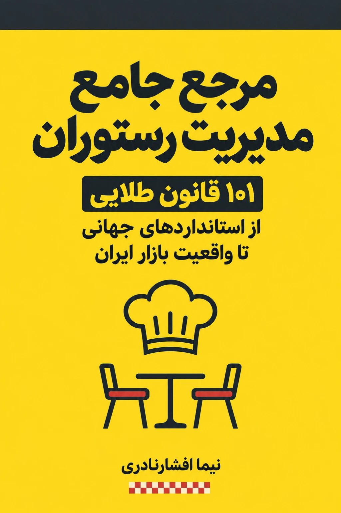

یک راهنمای عملی برای رستورانداری
غذای خوب،
شروع ماجراست.
رستوران خوب را با مدیریت خوب میسازیم.
از انتخاب ملک و قیمتگذاری منو تا مدیریت تیم و تجربهٔ مشتری؛ ۱۰۱ قانون برای اینکه کسبوکارتان را دقیقتر ببینید و بهتر اداره کنید.

این کتاب برای شماست اگر…
هر روز درگیر
رستورانید.
مالک یا مدیر هستید
فروش دارید، اما میخواهید هزینهها، تیم و عملیات را با عدد و روش روشنتری مدیریت کنید.
در فکر راهاندازی هستید
میخواهید پیش از اجارهٔ ملک، خرید تجهیزات و بستن منو، تصویر کاملتری از کار داشته باشید.
در این صنعت کار میکنید
در رستوران، کافه یا فستفود کار میکنید و میخواهید منطق کسبوکار پشتِ سرویس را بهتر بفهمید.
داخل کتاب چه میخوانید؟
از روزِ اول،
تا آخرِ شیفت.
هفت فصل، ۱۰۱ قانون و چهار چکلیست اجرایی. مسیرتان را انتخاب کنید و از همان مسئلهای شروع کنید که امروز با آن روبهرو هستید.
برای کارِ واقعی
- ۰۱۱—۱۵
قبل از اینکه در را باز کنید
امکانسنجی، مدل کسبوکار و انتخاب ملک
- ۰۲۱۶—۳۰
حسابوکتاب رستوران
اقتصاد رستوران، هزینهها و مدیریت مالی
- ۰۳۳۱—۴۵
منویی که حساب دارد
مهندسی منو، استانداردسازی رسپی و قیمتگذاری
- ۰۴۴۶—۶۰
پشتِ صحنهٔ یک سرویس خوب
آشپزخانه، تدارکات، انبارداری و بهداشت
- ۰۵۶۱—۷۵
تیمی که کار را جلو میبرد
منابع انسانی، استخدام و عملیات سالن
- ۰۶۷۶—۹۰
از سفارش تا دوباره برگشتن
تجربهٔ مشتری، بازاریابی و دلیوری
- ۰۷۹۱—۱۰۱
آماده برای روزهای سخت
ایمنی، مجوزها، مدیریت بحران و استراتژی
یک قدم تا کتاب
راهنما را بگیرید.
با مسئلهٔ خودتان
شروع کنید.
فرم کوتاه را تکمیل کنید؛ پس از ثبت موفق، به صفحهٔ دانلود نسخهٔ کامل میروید.
- ۵۲ صفحهفارسی و راستچین
- ۴ چکلیستبرای شروع و پایان شیفت
- بدون هزینهنسخهٔ الکترونیکی
چند پرسش کوتاه
پیش از شروع
کتاب واقعاً رایگان است؟
بله. دریافت این نسخهٔ PDF هزینهای ندارد و نیازی به ثبت اطلاعات پرداخت نیست.
برای کافه و فستفود هم کاربرد دارد؟
کتاب برای مالکان و مدیران رستوران، کافه و فستفود نوشته شده است. بسته به مدل کسبوکار، فصلها و چکلیستهای مرتبط را انتخاب کنید.
دادن شمارهٔ همراه الزامی است؟
خیر. برای دریافت کتاب فقط نام و ایمیل لازم است. انتخاب دریافت پیامهای بعدی هم اختیاری است.
اگر دانلود انجام نشد چه کنم؟
پس از ثبت موفق فرم، صفحهٔ دریافت کتاب باز میشود. اگر مشکلی داشتید، از طریق nimania@gmail.com اطلاع دهید.